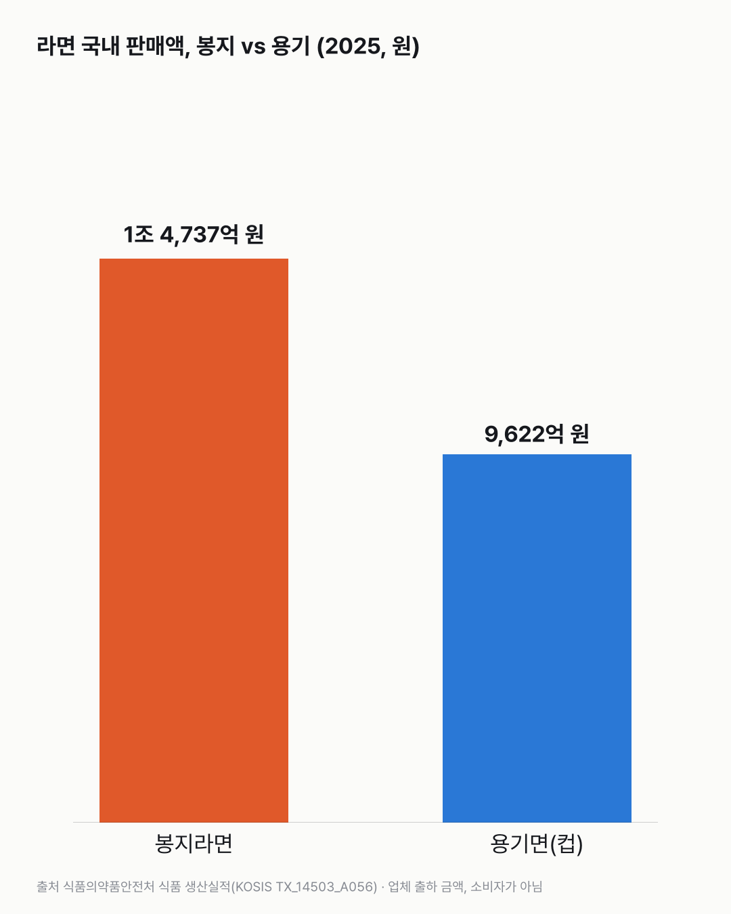
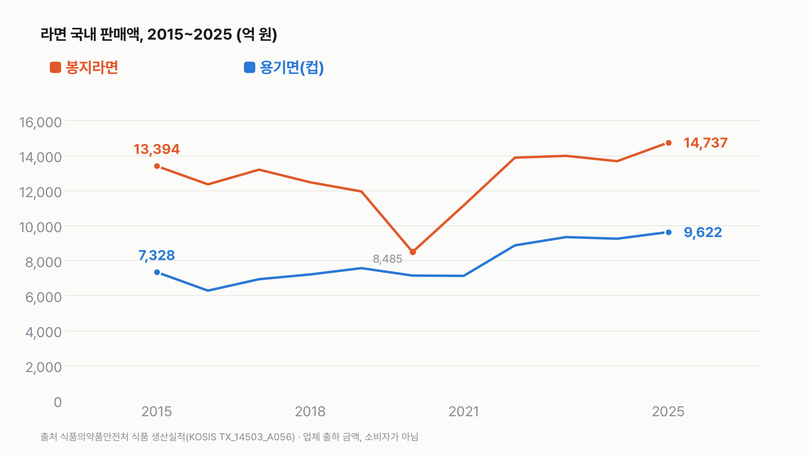

봉지라면 vs 컵라면, 한국에서 더 많이 팔리는 쪽은?
'봉지파냐 컵파냐'를 판매액으로 보면 봉지가 이겨요. 다만 이 숫자는 라면 회사가 출하한 금액이에요. 우리가 편의점이나 마트에서 낸 돈과는 달라요.

3줄 요약
- 2025년 라면 회사들이 국내에서 판 금액은 봉지라면 1조 4,737억 원, 컵에 든 용기면 9,622억 원이에요.
- 봉지라면이 용기면의 1.53배예요. 2015년부터 11년 동안 해마다 봉지가 더 많이 팔렸어요(금액 기준).
- 둘을 더한 2조 4,359억 원을 인구로 나누면 한 사람당 약 4만 7천 원어치 팔렸어요.
봉지 1조 4,737억 vs 용기 9,622억
2025년 국내판매액이에요.
| 종류 | 2025년 국내판매액 | 한 사람당 |
|---|---|---|
| 봉지라면(유탕면 봉지) | 1조 4,737억 원 | 약 2만 8,514원 |
| 용기면(유탕면 용기, 흔히 컵라면) | 9,622억 원 | 약 1만 8,617원 |
| 둘을 더하면 | 2조 4,359억 원 | 약 4만 7,131원 |
- 봉지라면이 용기면의 1.53배예요.
- 한 사람당 4만 7,131원은 한 달로 나누면 약 3,928원이에요.
- 한 사람당 값은 2025년 인구 5,168만 4,564명(장래인구추계, 외국인 포함)으로 나눈 거예요. 아기부터 어르신까지 모두 넣은 평균이에요.
11년 내내 봉지가 앞섰어요
2015년부터 2025년까지 해마다 봉지라면 판매액이 용기면보다 많았어요. 다만 차이는 줄었어요.
| 해 | 봉지 | 용기 | 봉지 ÷ 용기 |
|---|---|---|---|
| 2015년 | 1조 3,394억 원 | 7,328억 원 | 1.83배 |
| 2020년 | 8,485억 원 | 7,135억 원 | 1.19배 |
| 2025년 | 1조 4,737억 원 | 9,622억 원 | 1.53배 |
- 봉지와 용기를 더한 금액 가운데 용기면 비율은 2015년 35.4%에서 2025년 39.5%가 됐어요.
- 2015년과 견주면 봉지라면 판매액은 10.0%, 용기면은 31.3% 늘었어요.
- 2020년 봉지라면 판매액(8,485억 원)은 앞뒤 해보다 크게 낮아요. 표에 그렇게 나와요. 왜 그런지는 이 자료로 알 수 없어요.

2025년, 둘 다 가장 많이 팔린 해
봉지라면과 용기면 모두 2025년 판매액이 2015년 이후 가장 많아요. 1년 전보다 봉지는 7.8%, 용기는 4.1% 늘었어요. 다만 판매액은 값이 오른 것도 함께 들어간 금액이에요. 라면을 더 많이 팔았는지, 같은 양을 더 비싸게 팔았는지는 이 숫자만으로 나눌 수 없어요.
숫자를 다시 보며
'한국인이 라면에 1인당 4만 7천 원을 썼다'는 뜻이 아니에요. 라면 회사가 국내로 내보낸 금액을 인구로 나눈 값이에요. 가게에서 붙는 값, 할인, 해외에서 들여온 라면은 이 숫자에 없어요. 여러분은 봉지파인가요, 컵파인가요?
이 숫자는 어디서 왔나요
출처
기준일 2025년 판매액이에요(KOSIS 표 마지막 수정 2026년 6월 11일). KOSIS 값은 2026년 11월 14일에 받았어요.
식품의약품안전처식품 생산실적
- 면류 품목별 국내판매액KOSIS TX_14503_A056
판매액, 흐름
국가데이터처장래인구추계
- 총인구KOSIS DT_1BPA001
한 사람당
어떻게 셌나요
- 판매액: 식품의약품안전처 「식품 생산실적」 면류 품목별 국내판매액(KOSIS TX_14503_A056), 2015~2025년. '유탕면(봉지라면)'과 '유탕면(용기면)' 두 칸이에요. 단위는 천 원이고, 글에서는 억 원으로 반올림했어요.
- 인구: 국가데이터처 「장래인구추계」 2025년 총인구(중위 추계, 7월 1일 기준, 외국인 포함, KOSIS DT_1BPA001) 51,684,564명.
- 한 사람당: 판매액 ÷ 인구.
- 컵라면: 표의 이름은 '용기면'이에요. 컵이나 사발 같은 용기에 든 유탕면이라 이 글에서는 컵라면이라고도 불렀어요.
| 항목 | 값 | 잰 것 / 계산 |
|---|---|---|
| 봉지라면 국내판매액 2025 | 1,473,744,156천 원 | 잰 것(보고) |
| 용기면 국내판매액 2025 | 962,197,642천 원 | 잰 것(보고) |
| 인구 2025 | 51,684,564명 | 추계 |
| 한 사람당 | 봉지 28,514원 + 용기 18,617원 = 47,131원 | 계산 |
한계 5가지
이 데이터로 말할 수 없는 것
- 국내판매액은 업체가 출하한 금액이에요. 소비자가 매장에서 낸 돈(소매가)과 달라요. 그래서 '한국인이 라면에 쓴 돈'이 아니에요.
- 금액이라 몇 개가 팔렸는지는 알 수 없어요. 1인당 개수는 이 공식 표에 없어요.
- 해마다 값이 오른 것을 빼지 않은 금액이에요. 판매액이 늘었다고 먹은 양이 늘었다는 뜻은 아니에요.
- 수입 라면과 '유탕면'이 아닌 면(건면 등)은 이 두 칸에 들어 있지 않아요.
- 한 사람당 값은 전 국민 평균이에요. 라면을 먹지 않는 사람도 계산에 들어가요.
새 글 나오면 받아 보기
피드 리더 앱에 이 사이트 주소를 한 번 넣어 두면, 새 글이 올라올 때 앱에 떠요. 가입이나 메일 주소는 필요 없어요.
받는 법 보기
- 피드 리더 앱을 하나 골라요. 새 글을 모아 보여 주는 앱이에요. 예를 들면 Feedly나 Inoreader가 있어요. 둘 다 무료고 웹·휴대폰에서 써요.
- 앱에서 '구독 추가'(+)를 누르고 아래 주소를 붙여 넣어요.
- 끝이에요. 새 글이 올라오면 앱 목록에 떠요.
https://protofu.github.io/opendata-insight/feed.xmlFeedly를 쓴다면 여기를 눌러 바로 추가할 수도 있어요.